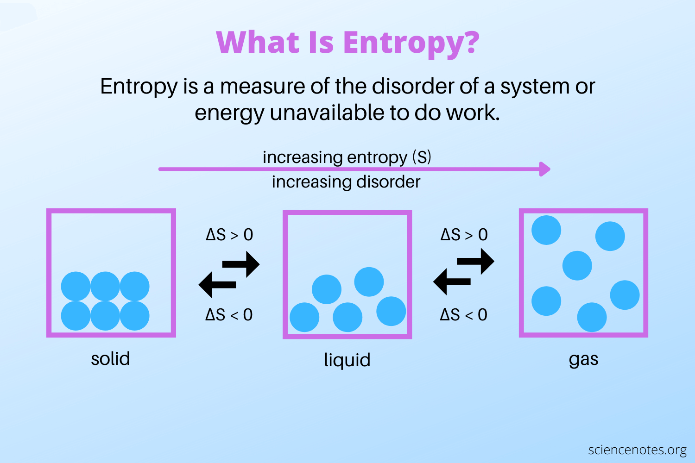
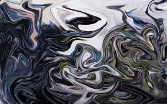
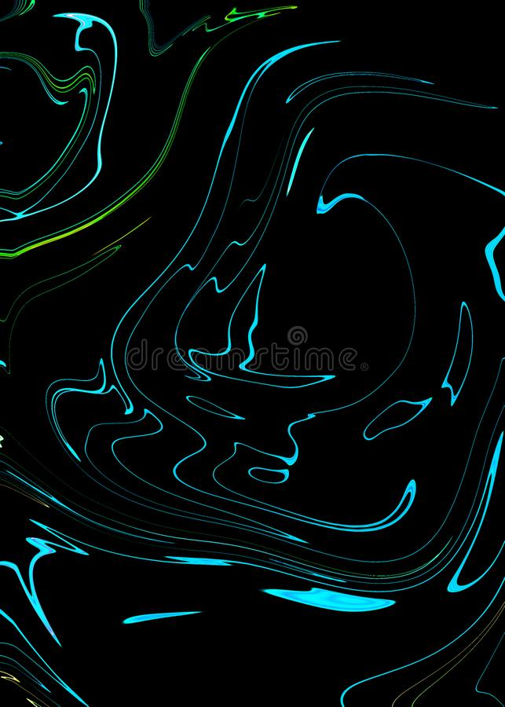
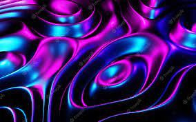

Interactive Design Research Project - Liquid Entropy (Fractal Fantasy Website)
Interactive Media A1 - Eleonora Filipic, s3955980
This design paper is a personal analysis of the interactive experience Liquid Entropy, which can be found on the website Fractal Fantasy. It contains
information about my personal interactive experience with the page, as well as notes on some further research.
The webpage Liquid Entropy is one of the many interactive experiences of the website.
The word interactive indicates any type of relationship and exchange of information between two entities, through a common medium; the term has been adopted
in the digital design field to describe interactive products and media, where a digital action corresponds to a visual or audio feedback from the system.
The word Entropy indicates more broadly the degree of disorder in a
system, a process of degradation to an ultimate state of chaos. This can be applied to the
concept behind Liquid Entropy, as the environment seems to have no particular rules and gives almost total freedom to the user,
who can decide to interact with it however and whenever they prefer. I like to think of Fractal
Fantasy, and Liquid Entropy in particular, to be a digital and almost blank canvas, on which the user can change the website tools (such as controls, settings,
menu and buttons) to create further spaces, worlds, sounds, environments.
Visit here Liquid Entropy
Week 2 Research
What was the first thing you paid attention to when interacting with the experience?
W hile navigating the website, I have taken notes about my personal experience with it and have summarised them below, including some personal
considerations. When landing on the website, the first thing I noitced was the fact that the homepage is, in fact, a 3D environment containing a
material with a liquid texture. I immediatey noticed that the liquid texture moves and follows the movements of the mouse, creating some sort of ripples and
bubbles over the interface. I also noticed that all these actions are accompanied by an audio feedback as well, for a better user/experience, interaction and
feedback. I have noticed that every point in the environment corresponds to a note, and electronic sound. When moving the mouse, we can hear different
sounds and can almost create a musical tune or melody if we pay particular attention to rhythm and intensity!
Spend two minutes with the experience and create a list of each of your discrete actions.
A fter playing around with the interface of the webpage, I have noticed that the only 3 visual elements in the webpage are: the actual environment,
the control panel and a small footer. When scrolling the mouse over the interface, I have made the following descrete actions:
Changing the settings in the control panel on the right side of the page. This allowed me to adjust the way the interactive elements appear on the page,
and change the way in which I could interact with the digital environemnt. I have changed many times the mouse size, vibration rate, speed,
light, delay feedback, entropy and reset button. Below are some videos showing how I changed the settings to get some interesting results. The first
video below show the interface with default settings, the second video shows settings reset to 0, and the last one has settings brought up
to the maximum (100).
Personally, my favourite is the lst one: the resut is crazy and produces very cool electronic sounds and music!
I have also noticed that, when I moved the mouse towards the bottom of the page, I could hear a low-pitch electronic sound, similar to a glitch, which lasts
until I move the mouse towards another direction. The same thing happens if I scroll up, however in this case, the sound will be sharp and
high-pitch, almost disturbing if the volume of the speakers is too loud. If I move the mouse horizontally instead of vertically, the website will
produce an error sound, very deep and slow which soon fades out. In a similar way, when keeping the mouse in the same position for a while, the
previous sounds continues to play until it slowly fades out. At last, it's interesting to note how there is a very sharp and noisy background sound
(similar to an alarm) which continues to play in the background regardless of our actions.
What part of the experience did you spend the most time engaging with?
I found myself engaging the most with the liquid interface, as I really enjoyed observing the ripples it would create to follow the movements of the mouse.
The liquid pattern imitates very well how a real liquid inside a container would move when shaken. I also believe that watching the ripples and bubbles
had a really calming, relaxing and soothing effect on me. I also really appreciated the contrast between lights and dark shades of these bubbles, as if
they were real soap bubbles reflecting the light.
What was the most common action in your two minute interaction with the experience?
I n my two minute interaction with the experience, the action I repeated the most was creating liquqid patterns with the high delay/feedback
and normalsratio controls. I found out that after applying these settings and clicking or dragging the mouse on the screen, the environment creates
larger bubbles with a high delay feedback, so many ripples would repeat after the first one and would spread out on the screen more quickly and broadily.
(see images below).
What is your impression of the intended primary goal of the interactive experience?
A fter interacting with this digital experience, I believe the author's goal was to design a digital product which users could interact with and feel as if they
were immersed in a fantasy environment, floating in a liquid atmosphere and experiencing sounds, colours, lights and textures. The material is not clear to
me yet, but overall, I believe as soon as you land on the page, it is very easy to understand that the liquid is all over and is the major component of the
environment. I also believe the designers who created this product, wanted it to be customizeable and changeable according to the user's own personal
preferences, so that they could have a tailored experience of the environment. Whether you are familiar with similar digital experiences or not, it's more
or less easy to play around with it and create something new. I think the experience is quite versatile, adaptable and accessible. I believe that, overall,
this is a great design choice. As Miriam Suzanne states, digital products are not meant to be the final, static solutions, they are simply proposals, ideas,
starting points from which users of the web can cusotmize and adapt them to their own needs and create their own perosnal experience of the design product.
What is your impression of how the interactive experience communicates its primary goal?
I believe Liquid Entropy communicates quite well its primary goal to users. Mainly because of its title, we can soon expect to be immersed in some
kind of fantasy world with liquid textures. At first it took me a couple of seconds to understand how I could engage properly with the digital environment,
as I thought there was some kind of trick behind the liquid texture, that would be revealed at the end of the navigation. I thought the navigation was like
a game, at the end of which there would be the final objective. However, I soon realised that, the experience of the environment could potentially have
no end, as for every action we make, the environment will continue to give us visual feedback (bubbles, ripples) and an audio response (sound design).
However, overall, I believe it was a good design choice to include in the interface only the main liquid environment and a small control panel on the right.
I feel like the minimal UI design approach easily and clearly communicates to the user how t interact with the experience and explains that there are only
two ways to interact with the experience:
moving the mouse around to get audiovisual feedback
changing the settings to always arrange different approaches and navigation experiences
In general, I believe that a clear UI is almost always a good chooice, as it can unpack and explain even complex experiences.
What is your impression of how the experience should be interacted with over time? (For how long
and how many different times)
This digital experience is very engaging at the start; however after a first couple of times I went back to play around with it, I felt like there wasn't much
to do, or at least, nothing new to experience. Therefore I believe that, over time, the level of engagement with the experience would probably get lower.
There are, potentially, infinite possibilities and settings arrangements (as there are infinite combination of numbers in the controls panel,
this gives us infinite combinations). So that is probably the only way you could experience something new after a while. However, the interaction with
the actual liquid environment seems to be limited to clicking and scrolling the mouse around, and after maybe 6 or 7 times, can become a little less catchy.
What is your impression of how the interactive experience communicates how it should be
interacted with over time?
I don't believe the experience communicates clearly how it should be experienced over time. I think the environment is designed to allow the user to interact
with the liquid environment, at any time. It's up to the user to decide how many times they want to engage with it. Personally, I think 6 or 7 times were
enough for me to analyse the different affordances and possibilities of the page. I really believe it's up to the user to decide how many times they want
or need to visit the page before they explore all the features available.
Week 3 Research:
Metaphors (what is the website referencing to?)
What other media forms (digital or otherwise) does the experience reference?

T he digital world is full of metaphors, whether it be a metaphor of the physical world or a reference to other digital media. In this case, I believe the
website is referencing to the thermodynamics concept of "entropy". In scientific terms, the latter refers to the measurable physical property of a system's
thermal energy; most broadily, it is associated with a state of disorder and uncertainty and can affect both solid and liquid objects. I believe the page
also is inspired by digital liquid texture, from fluid/liquid art, neon and liquid cyberpunk aesthetics. Some of those digital textures are inspired
by marble and agathe colours and patterns, neon lights and retrofuturistic patterns. Below are some reference images that show the key visual elements
of these artistic movements.
  
While navigating and interacting with the experience, I noticed that the liquid inside of the environment has quite a thick texture, and seems to be almost
sticky. This reminds me perhaps of the consistency and colour of refined fossil fuels such as liquid petroleum or crude oil, as shown below.
What does this reference or references suggest to you about how you should act when engaging with it?
This is not an easy question. The references mentioned above all refer to a futuristic, almost dystopian world, made of glitch,
cyberpunk geometry and dystopian environments. The aesthetic and artistic movements (liquid) Cyberpunk and, in particuar, Retro-futurism heavily
influence the design of Liquid Entropy. They refer to a dystopian world where past and future, progress and regress are mixed together to reinvent a
technological past that never happened or perhaps a world that might happen in the future. I reckon, perhaps, that the references I mentioned above
might suggest to the user that the environment is not a game, or at least, it's not meant to be. It could suggest that the environment has to be explored
with caution as it might hide some dangers. I believe this is also confirmed and supported by the sharp, electronic and artificial sound design created
for the environment, which gives to the overall experience a deep and suspicious vibe. Although the idea of creating bubbles, ripples, and sounds through
this digital experience, might seem fun and cheerful, I believe the concept behind the interface could hide something deeper than that; and this is reinforced
by those references and metaphors.
What does this reference or references suggest to you about how you should feel when engaging with it?
As mentioned above, I really believe that even though the experience might look familiar, or resemble the characteristics of an online videogame, the
concept behind it my be far deeper than just creating bubbles and sounds. Maybe, this concept might not be easy to grasp when analysing the aesthetics
of the experience, but it is definitely noticeable when listening to the sounds. Piercing, sharp, crisp, high-pitch, high-MSI and electronic sounds certainly
don't describe a cheerful and joyful environment. Therefore I believe these features, in particular the sonic elements, do raise our awareness of the digital
environment we are exploring, and suggest that we should be alert or even cautious when engaging with it.
What is the most frustrating element of the interaction to you and what makes it frustrating?
I must admit that, overall, I really enjoyed the experience. However, the only thing I probably didn't enjoy that much over time, was the sound design.
Even though it helps to communicate useful information about the environment, it can become a bit too loud and sharp sometimes, and this can get a little
frustrating over time. I found myself having to turn down the volume or even turn the sound completely off sometimes.
What is the most satisfying element of the interaction to you and what makes it satisfying?
On the other hand, I believe the most pleasant and satisfying element for me was to create visual patterns with the ripples and bubbles, repeat the same
movements and create new patterns as well. It's always interesting to load to the page again, restart the settings and interface and starts playing with
new patterns. As mentioned above, if it wasn't for the sharp sound design, the interface and the patterns and textures it creates, woul be almost relaxing
to watch and engage with. (see video below, sound is off).


{kind=link}
{kind=link}